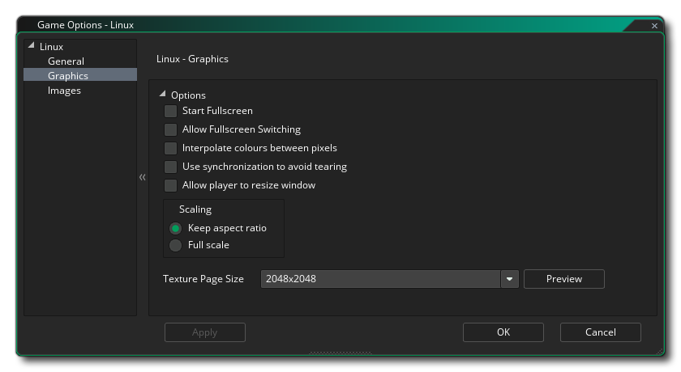

This section outlines the different options available to you that control how your Ubuntu (Linux) game projects will be compiled. The different sections are:

This tab is where you set the name of your game as it is to be displayed while running, and can also supply a contact email and a description (short and long), as well as a URL for the homepage of the game or the developer.

The graphics options are those that you should configure to determine how your game will use the graphics card of your target Ubuntu machine. The following options are included for you to modify:
- Start Fullscreen: If this is checked, the game will start in fullscreen mode otherwise it will start windowed. This is off by default.
- Allow Fullscreen Switching: With this ticked the user can switch from fullscreen to windowed and back again using the standard Ubuntu OS shortcuts. This is off by default.
- Interpolate colours between pixels: Turns on interpolation, which basically "smooths" pixels. For crisp pixel graphics, it should be off, but if you have nice alpha blends and smoothed edged graphics it is better left on.This is off by default.
- Display Cursor: When this option is enabled, the default OS cursor will be shown in your game. If this is disabled, then while the mouse is over the game window, there will be no visible cursor unless you have created one as part of the game project (this is on by default).
- Use synchronization to avoid tearing: This toggles v-sync on or off (v-sync is used to synchronise your game update speed to the refresh rate of the monitor). Note, that if you have a game with a room speed of 120 and the player has a monitor with a refresh rate of 60, turning this option on will lock your game speed to 60 too. This is off by default.
- Allow window resize: Checking this permits the user to change the size of the game window (the Borderless Window option needs to be off for this to work). This option is off by default.
- Scaling: Here you can choose to maintain aspect ratio (so a 4:3 room will be "letter boxed" on a 16:9) or to scale fully (stretching the image to fit the full screen).
WARNING! Switching off the application surface will disable all the scaling options set in the Ubuntu Game Options until it has been switched back on again. See The Application Surface for further details.Finally there is the option to set the size of the Texture Page. The default (and most compatible) size is 2048x2048, but you can choose from anywhere between 256x256 up to a whopping 8192x8192! There is also a button marked View which will generate the texture pages for this platform and then open a window so that you can see how they look. This can be very useful if you wish to see how the texture pages are structured and to prevent having texture pages larger (or smaller) than necessary.
NOTE: Be aware that the larger the size of the texture page, the less compatible your game will be on Macs with lower specifications.

Here you can add a splash screen for your game, and set the game icon that will be used. The icon must be a 64x64 pixel image in the .png format, and the splash screen should be at least the same size as the fist room in your game (or it's view port) and be .png format too. The splash screen will be shown while the game loads, and can be enabled or disabled by checking the Use Splash Screen option (which is off by default).
It is worth noting that GameMaker Studio 2 has a Project Image Generator tool which can be used to automatically create all the images required for all the different target platforms your game is being compiled to. If you use this tool, you should revise the images created to ensure that they are what you require.